FORD EXPLORER – Przestronny SUV z 2021 roku, oferujący nowoczesne technologie i wysoki komfort podróżowania. Samochód wyróżnia się bogatym wyposażeniem oraz zaawansowanymi systemami bezpieczeństwa. Idealny dla rodzin i osób ceniących wygodę oraz wszechstronność.
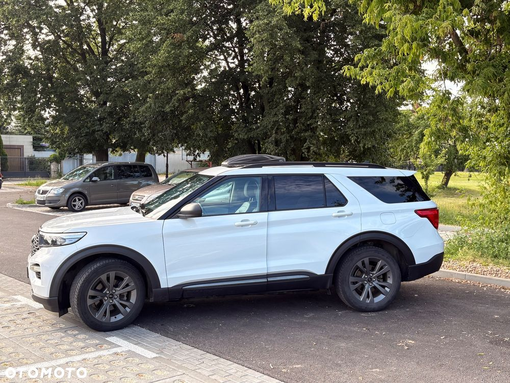
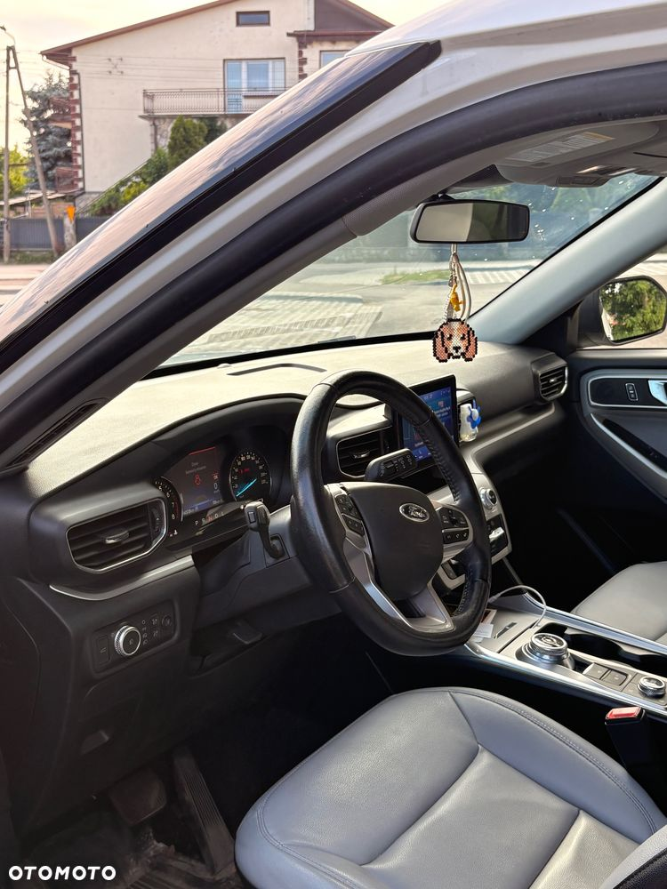
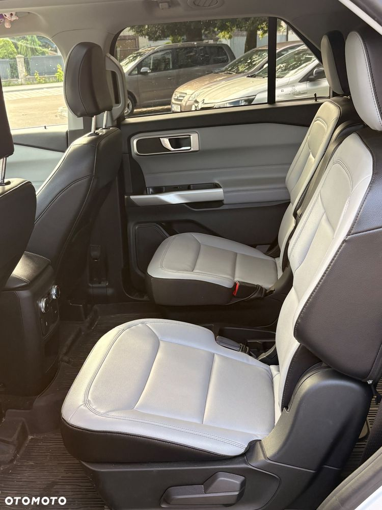
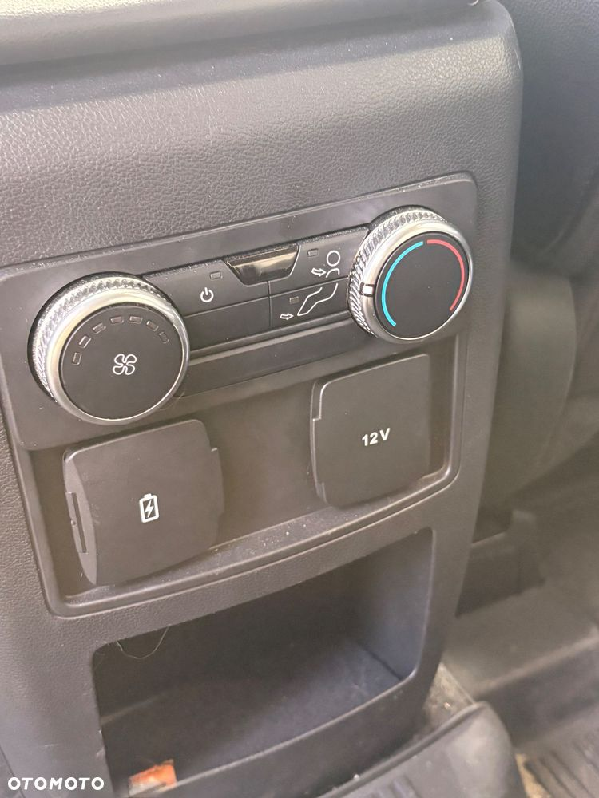
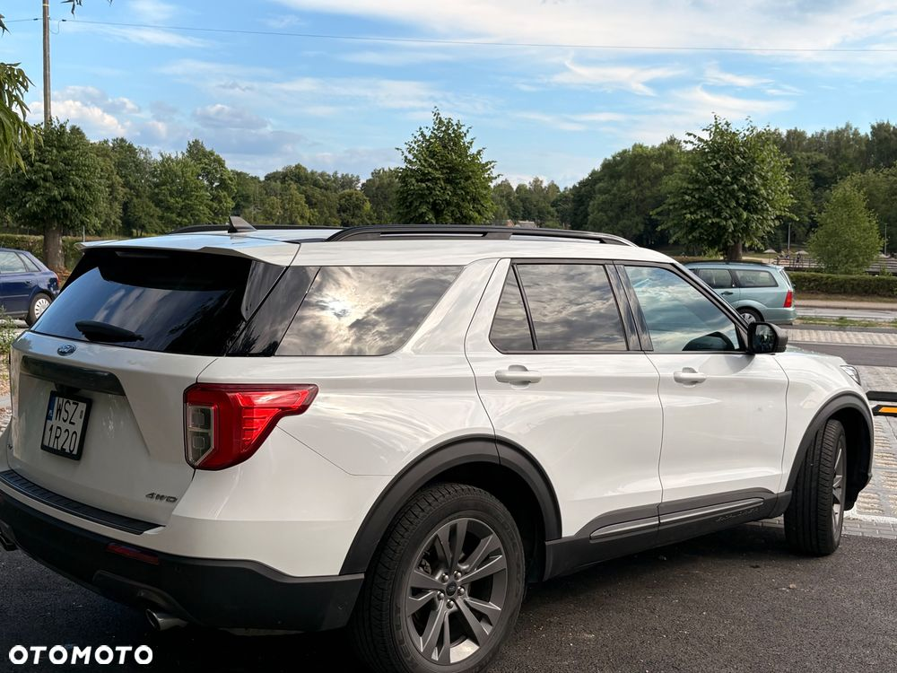
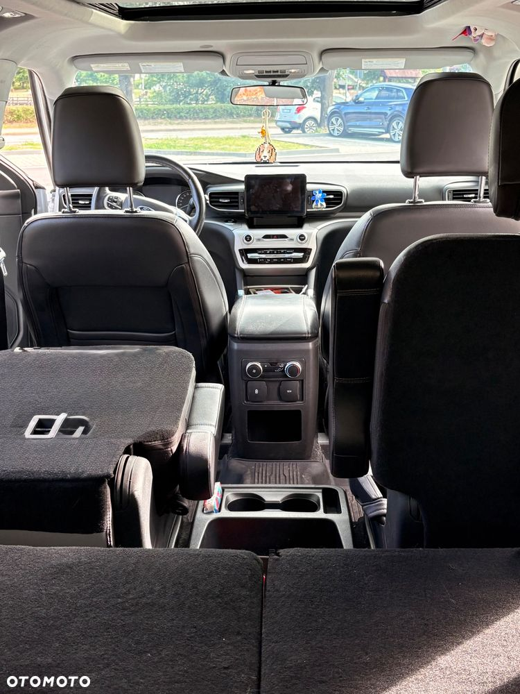
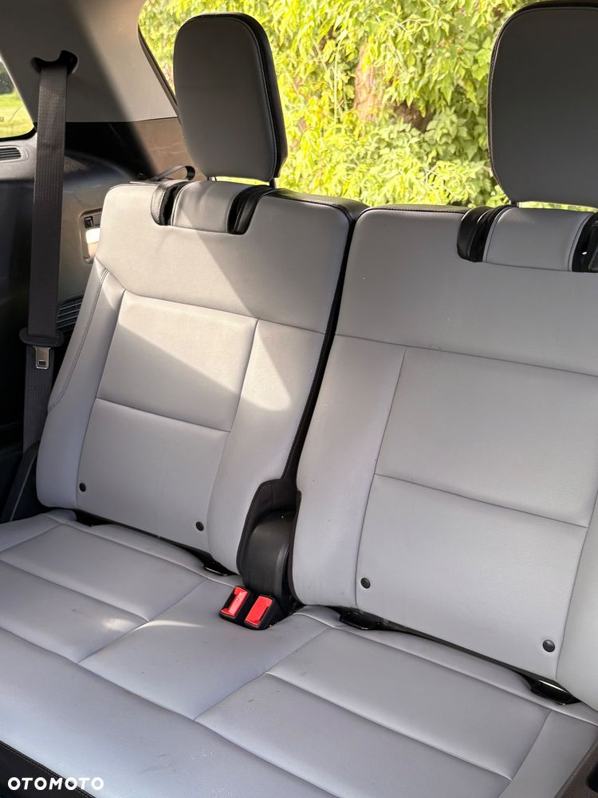
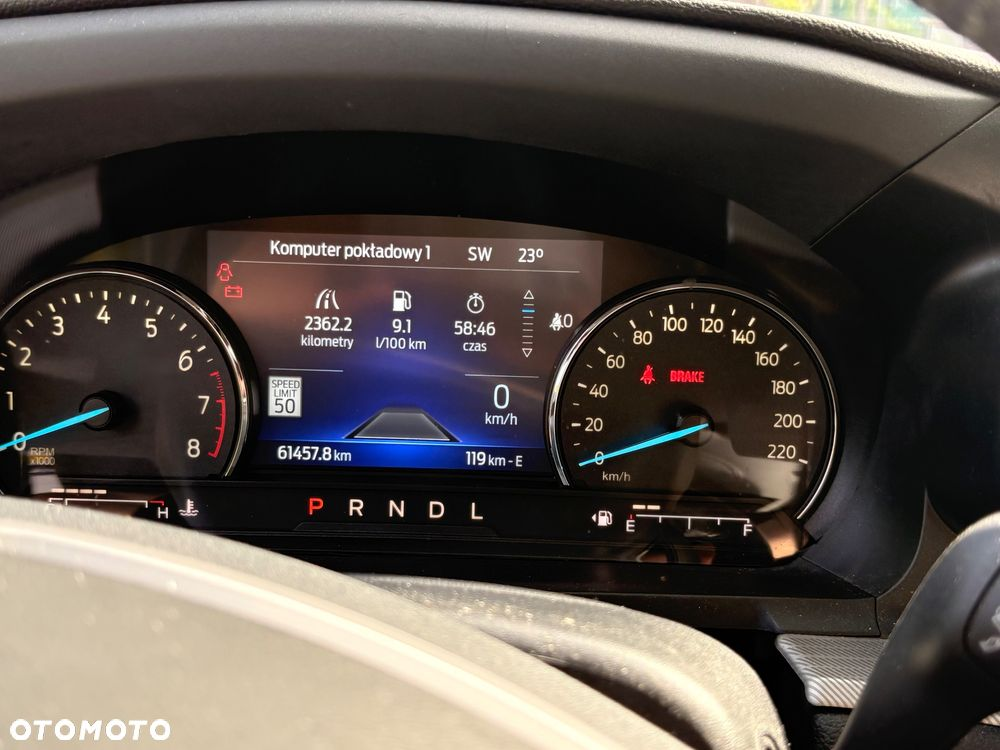
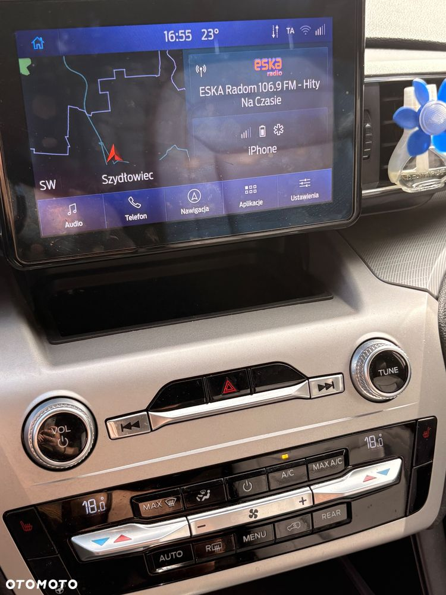
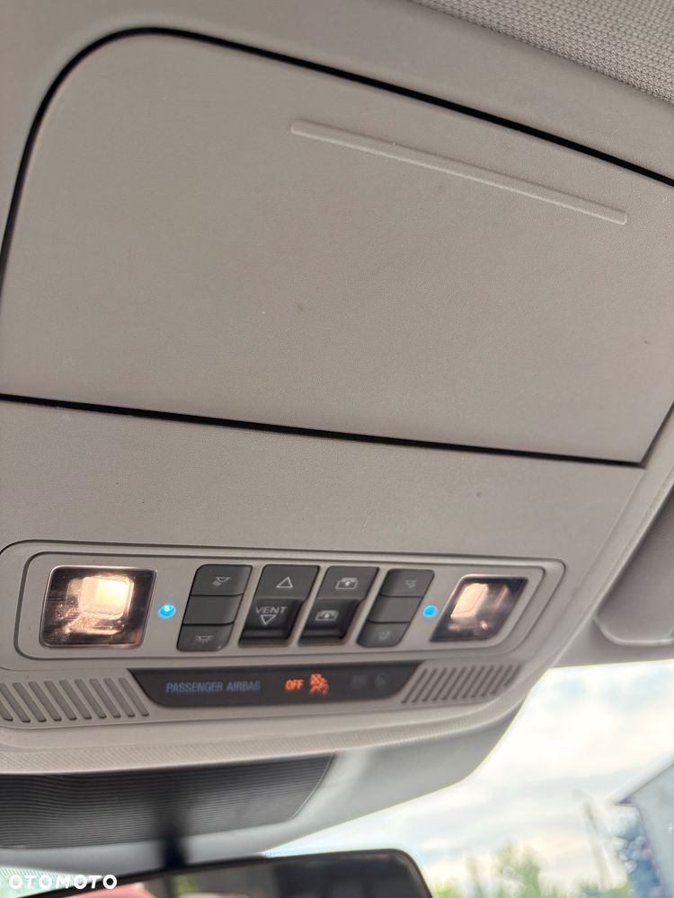
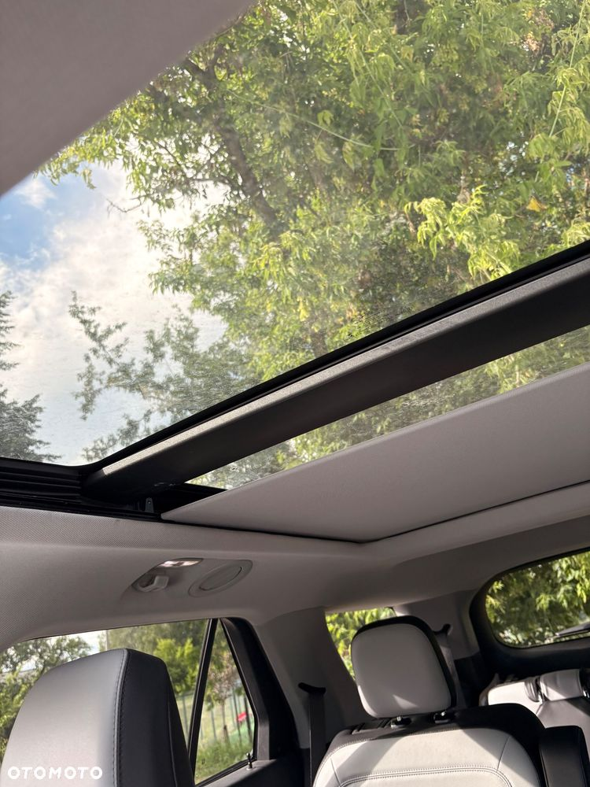
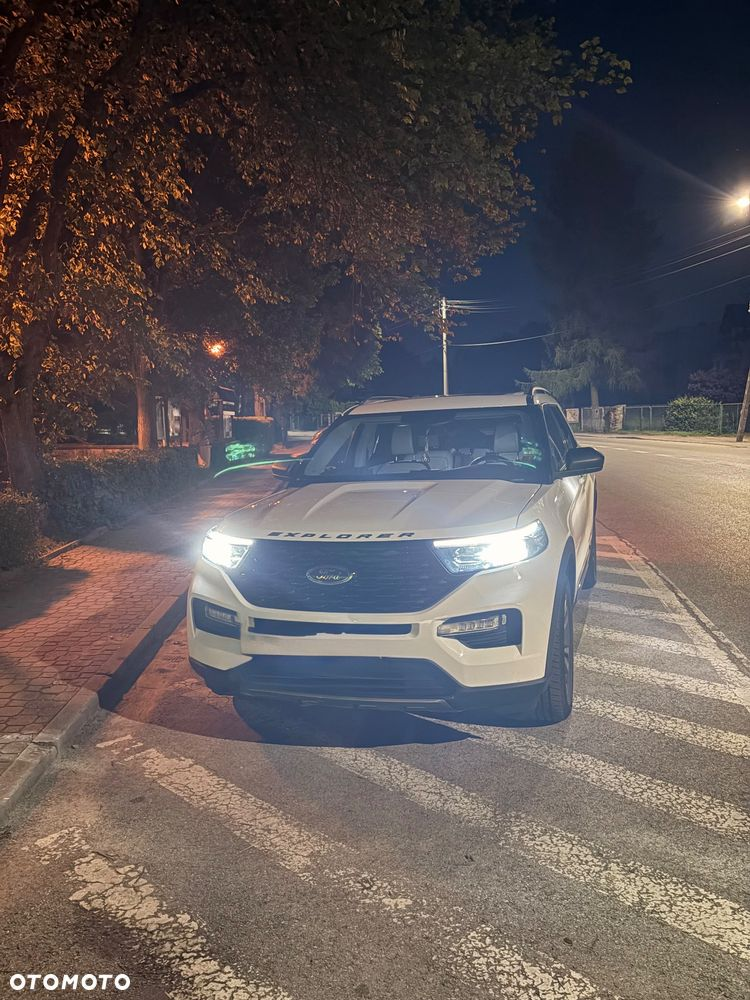
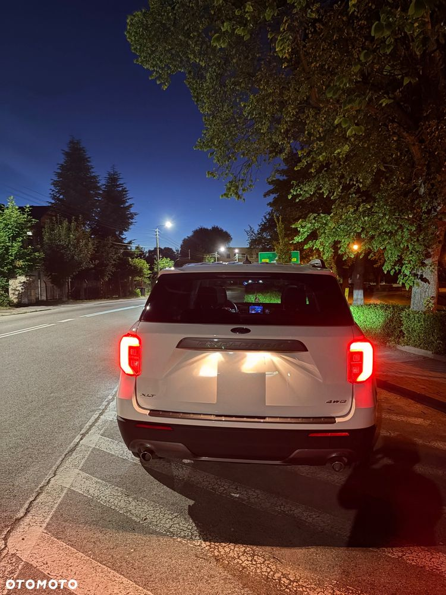